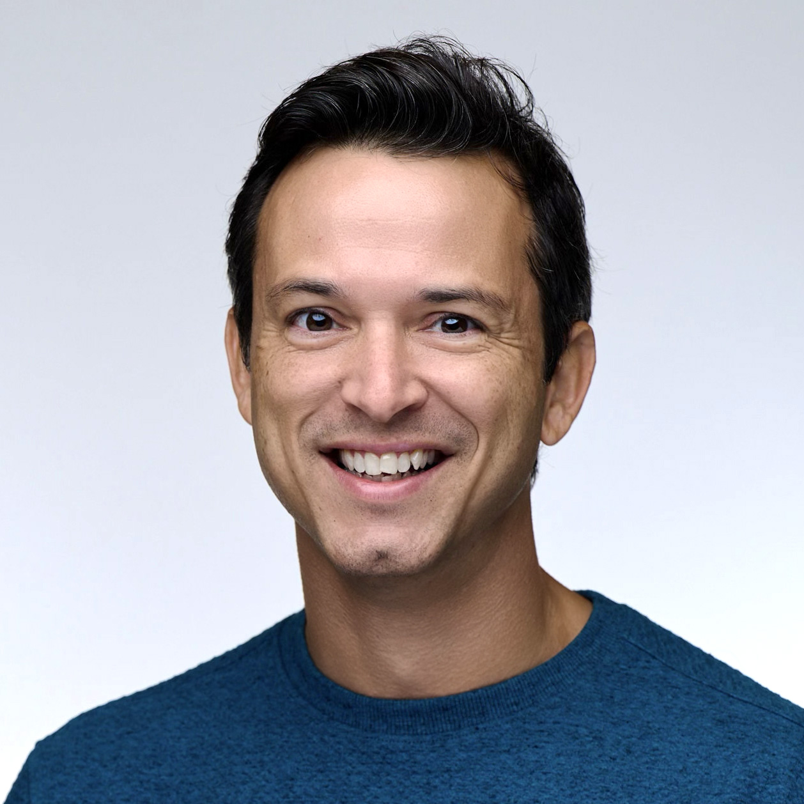

I'm Joe, a designer and developer in Burlington, Vermont. For fifteen years I've worked alongside small teams, founders, and non-profits to figure out what's worth building, then build it well.

{{ p.d }}
Most engagements touch more than one of these. We'll figure out which one matters first.